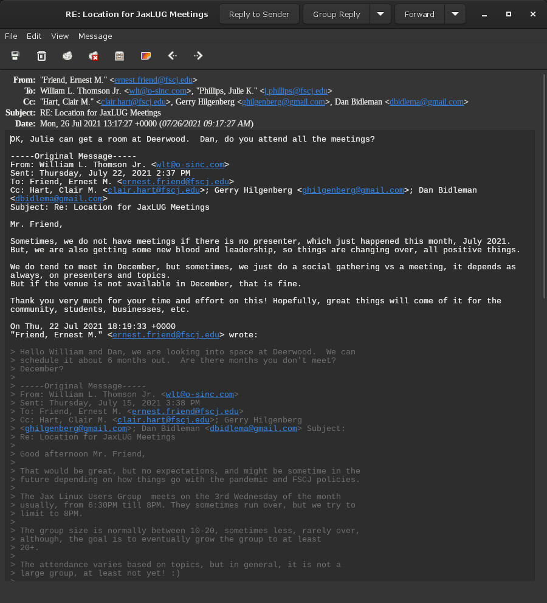
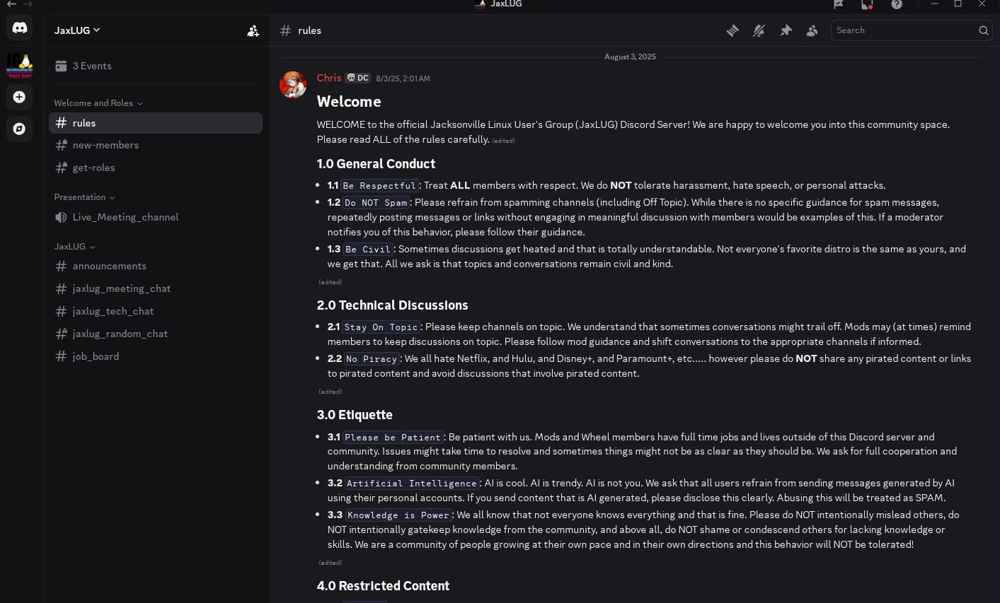
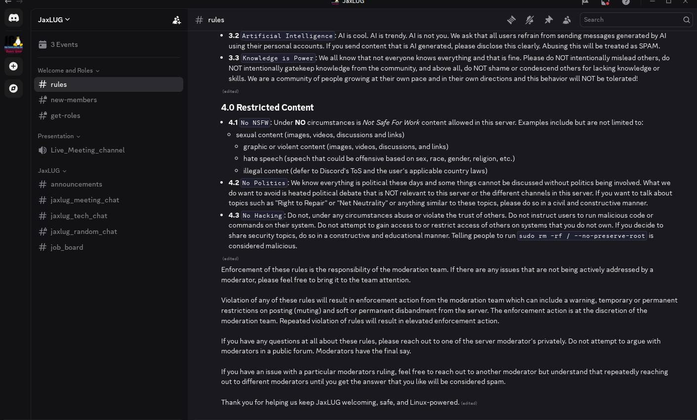
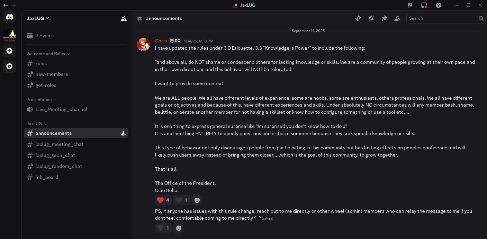
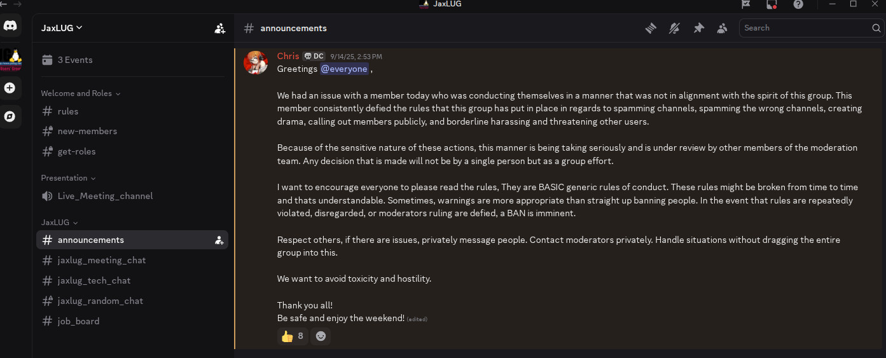
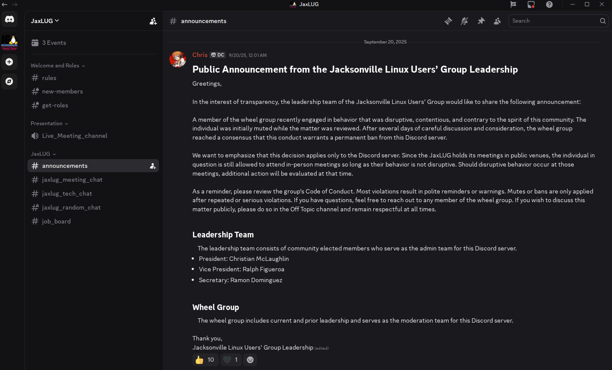
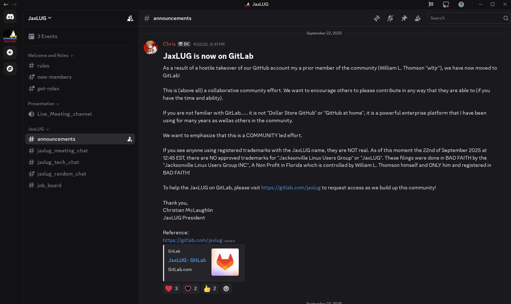
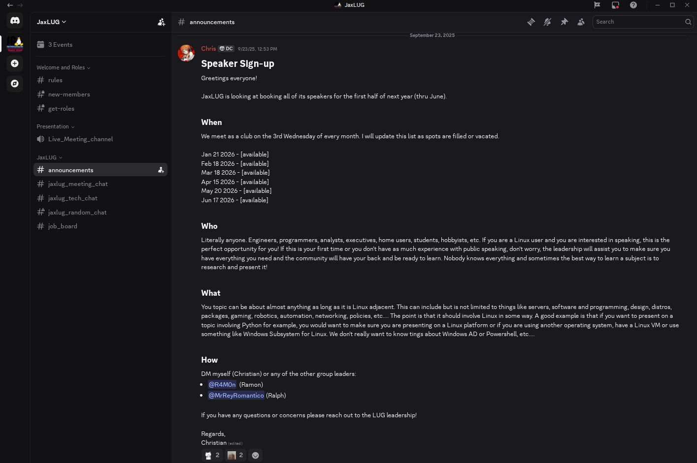
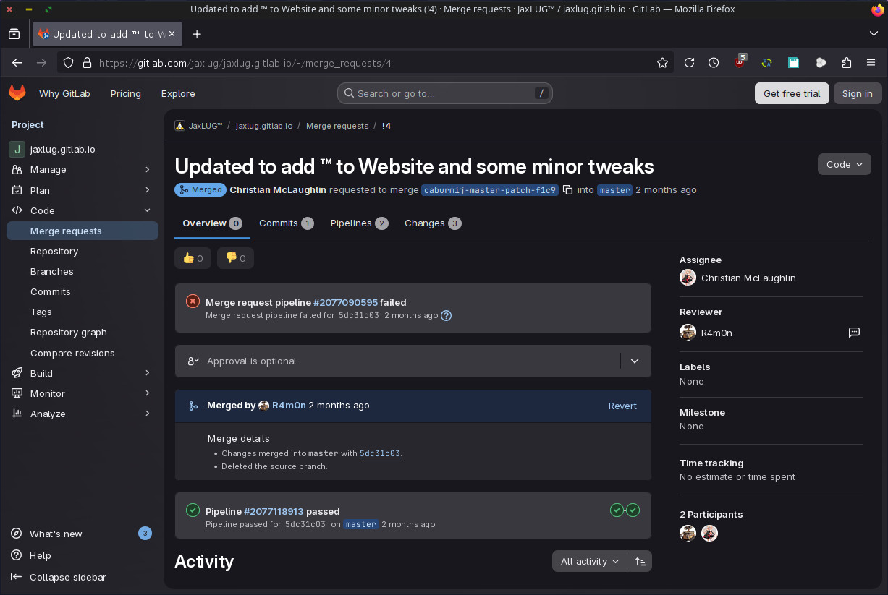
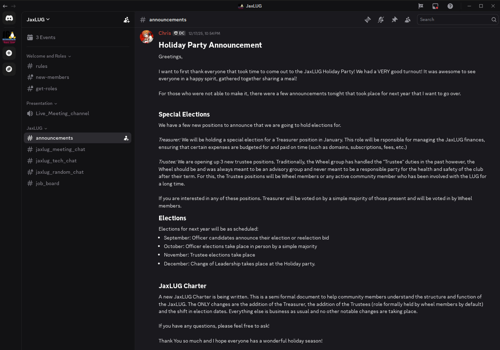

Christian McLaughlin
This aims to cover the history of Christian McLaughlin in the past unofficial Jacksonville Linux Users Group community. We would first like to thank Christian for his service to the United States in the United States Navy, and to all those who do and have served, especially, those who paid the ultimate price!
Given Christian's service to the nation, one would assume Christian to have respect for authority, seniority, and the rule of law, but in a free nation, even those who serve have free choices. This is not to disparage Christian, but this is his current unbecoming conduct, that is not reflective of his service or that of those who serve and do respect all the formentioned.
Christian has a few monikers, Github handle caburmij, Gitlab handle caburmij, Discord handle caburmij (482037804583616512), X handle caburmij, and for reference, Christian's LinkedIn profile a.k.a the-hacker-chris, and his old LinkedIn profile from the navy.
This is a work in progress as Christian's community actions and conduct continue, and this page will be updated accordingly; time permitting.
JaxLUG Start

Given there are no rosters or way of tracking in the past unofficial Jacksonville Linux Users Group it is hard to determine the exact date when Christian showed up, but the first publicly confirmable record is when he presented on 2021/06/16, but there does not seem to be a recording available online, nor any links to the presentation files, and that record ONLY exists in the poorly maintained meeting history page.
Also in 2021, it seems another, Dan Bidleman may have been seeking to encourage Christian to perform a "leadership" role in the group. This will have to be further detailed at a later time, but another, William L. Thomson, was working to get the unofficial Jacksonville Linux Users group meeting space at FSCJ via one of William's contacts, Ernie Friend; who has since departed FSCJ. William was unfamiliar with Christian, William did not want to risk his reputation with FSCJ on Christian which seems William was correct on, and therefore, involving Dan in communications with FSCJ and not Christian. Dan failed to proceed beyond the shown message.
JaxLUG Leader
Christian McLaughlin is NOT the President of the Jacksonville Linux Users Group Inc. a Florida Non-Profit Corporation 501(c)(3), for more information please refer to the legal page.
There are no public records or means to verify, much less any legal authority, or similar, but it appears in July 2025, Christian was "elected" to become the leader of the past unofficial Jacksonville Linux Users Group at a meeting in-person by unknown voters with unknown unrecorded results. This positions has been referred to by legal titles such as "President", but the group has not had a legal presence since 2004.
Christian has no verifiable means of anything, publicly or privately!
Furthermore, the group failed to ever maintain any sort of voting records and history. This is an issue William L. Thomson Jr. has raised for over a decade and a half with the group, on proper elections, voting records, legal structure, etc. But, at minimum, something better than a handful of people, along with any new people, showing to an annual in-person meeting and "electing" a leader via some process that likely has differed each time for years. The majority of time, the "leader" has been one of a handful of the same group of people for about a decade, until, Christian.
What Christian does have is control over the old unofficial Discord, where he has abused his server ownership, removing William's server permissions, removing William from the private wheel group channels, later timing out William, then banning William from server, etc. Christian seems to have finally obtained domain name record control over jaxlug.net, after a newly created fraudulent Gitlab, and the rest is unknown, as various accounts on various platforms were created and are owned/controlled by various individuals; a mess to be documented.
JaxLUG.net DNS
Where a lot of this starts is in August 2025, no longer verifiable due to Christian's removal of William from the unofficial Discord server, after removing server permissions, then later removal from the private wheel channels, were for weeks Christian was complaining about inability to access jaxlug.net domain name records. After the group had lost jaxlug.org in 2023, when Christian was active in the community!
The problem was, the domain was managed at a location that did have multiple contacts, but the 2FA only went to the first phone number on file. All the phone numbers were unknown, and people in the wheel channels, including William, were working to figure out who all the numbers belonged do, one being Dan Bidleman, but seems the first was Michael Potts, we ruled out Gene Cronk, and most others, but Michael was unavailable and unresponsive for weeks!
This caused William to get involved, where he rather not, but the group having lost jaxlug.org, and also potentially losing jaxlug.net that Gene had registered in protest of William's reluctance to hand over control of jaxlug.org domain, which William did to Dan, and they all lost jaxlug.org.
History was repeating...
Discord Server Owner
It is unknown when Dan Bidleman transferred ownership of the Discord server he unilaterally created without discussion to Christian. What is know is Christian abused this ownership in creating and abusing rules, and removing the four time senior William's server permission, in addition to removal from private "wheel" channels, timeout, and ban. It appears that Dan transferred this server to Christian in September 2025.
Christian is advised to transfer the ownership of that unofficial unauthorized Discord server to the Official Legal Jacksonville Legal Users Group Inc. or to simply delete the server; as we have our own.
Rules and Respect!

As William returned to being active in August 2025 in the past unofficial Jacksonville Linux Users Group, due to the call to action over the jaxlug.net DNS situation and Christian's noise, William began looking around, and William had noticed a lot of rules. The group had existed for several decades without a bunch of rules. William has decades of community experience, and knows most times in communities, over-policing, unbalanced, and unequal application of rules is highly destructive, as was the case for Gentoo Linux. This is a major lesson the Jacksonville community need not learn the hard way.
William has a lot of issues with rules Christian was unilaterally producing. Prior to actions, William was in the private wheel channels, and the rules changes were NEVER discussed. Christian made them at his leisure and enforced them at his discretion, and never equally, never against those he liked, and at times, literally started to create rules specific to William, or Christian's perspective of William's conduct or intentions.
Even then, actions Christian took against William, removing server permissions, removing from wheel, timing out, later complete removal from server, were not part of any documented procedures or rules. Christian and others can claim otherwise, but cannot prove otherwise, short of logs from private discussions among "wheel members" of a public community group. There should be absolutely no private discussions held on anything, if anything, read only channels, so some can discuss, and all can view, just as the State of Florida has Sunshine Laws. Honorable, justifiable, provable conduct, can always be done in public, absolutely no justification or need for privacy or secrecy of any kind!
Christian has abused his control over a platform! No rules exist anywhere other than the unofficial Discord server that he owns, rules that HE produced, and only editable by HIM! Rules should be made public online, and come from the community, even its leaders should serve the will of the community, NOT produce rules themselves, for themselves, to serve themselves!
Christian created, abused, and used rules to take away William L. Thomson Jr.'s voice, to take away his freedom of speech, in a public community in the United States!
Christian, who served in the United States Navy, seems to have forgotten the most fundamental principle that people of the armed forces should seek to uphold, both foreign and domestic. Especially, when dealing with a more than four time senior member of the community, with vastly more community and industry experience, much less recent academic accomplishments at FSCJ and UNF! Christian had no right or justification to take away William's voice, but he did so with a motive.
William, is the type of person that Christian, of the US Navy, deems to be a harm to the community, and therefore, must lose their voice, their freedom of speech. Why? To prevent William from having any influence, to being able to tell any truths, to being able to progress things in ways that Christian is incapable of, and since Christian refuses to work with William, actions had to be taken to counter Christian's extremely harmful actions. Harmful in ways Christian may never understand, or at least will not till a few decades later of community and industry experience.
For likely, the first time ever, in some over two decades, that anyone was banned from anything Linux community was in 2025 by Christian, against the more than four time senior, William L. Thomson Jr.!
Declined Role
As documented on our open legal positions page, William L. Thomson Jr. made an offer to infer the legal title of President, which Christian McLaughlin did not legally posses nor any form of informal documentation, and Christian refused the offer in-person on 9/17/2025!
Christian declined a legal role and position, that William had spent his own money and time, and instead, Christian has chosen active opposition against William, including, but not limited to, theft of ideas. Christian fears Williams leadership, and at multiple opportunities, is taking Williams ideas, while working against a legal organization. Committing various known acts of public fraud!
Github Lies!

Christian is disrespectful to the point of slandering William, who can no longer speak or defend himself, and telling public lies. This is a direct result of Christian's lack of knowledge of the community, being more than four time junior to William, who William back in 2017, mentioned moving to and using Github in this post to the now unused, dead, getting spammed, google groups mailing list.

William cannot take over something he created and has owned the entire time, several years before Christian ever was around the community. But, some people cannot be bothered with history or facts!
While another member Ramon Dominguez-Garcia, who is openly both hostile and rude towards William, despite William's first contact with him, a stranger at the time, being very cordial, and William giving Ramon access to the Github account William created years prior. It was Ramon, or another, not William, who in turn gave Christian access. Again, all proving, William, cannot take over something he had owned the entire time. William did change their ownership, to prevent them from taking further action against William, and this enraged Christian and Ramon; much more so Ramon. They both have equally exhibited extremely poor leadership judgement and skills!
The only hostility, is that which is directed towards William! Christian using lies to slander William, and it sure sounds good, "hostile take over of our Github"! Everyone dislike the evil villain William. It is not theirs, nor William's, but the communities, and now property of a proper non-profit that can exist regardless of any individual. Many people fail in stewardship treating community property as their own, which it most certainly is not anyone's but everyone's!
Intellectual Theft

If all this is not enough, Christian has to steal William's ideas. The first being meetings in advance, which Christian stole the idea from William in this commit at 11:07:56 AM EST where William mentioned "We will be looking to fill the 2026 calendar with presentations as much in advanced as possible!"
What does Christian turn around and do? Steal William's idea, and then, presents it as his own, PLAGIARISM!
Christian's announcement at 12:53 PM EST, hours after William made the commit, and because Christian was still on the Github account, he was notified, he was aware of William's commit, and well...
One of many ideas Christian has gotten from William, the #job_board channel in the unofficial Discord, the idea of holding Install Fests, that the group has not entertained in years or held one in decades, of having a permanent location for meetings, as William had been working on with FSCJ since 2021, and was actively working on in 2025. Christian feels Keiser University is superior to FSCJ, despite the fact that FSCJ has numerous campuses, vastly more students and resources, and could integrate into FSCJ curriculum, among other things.
The problem is, William has vastly more ideas, plans, things in the works and things already done, than Christian can possibly ever do, and this is why Christian has acted against William, going against the best interest of the community, for his own selfish ego-driven agenda and interests!
Trademark Symbol ™

Another idea that Christian stole, and is using incorrectly, fraudulently, and potentially civilly illegal, is the use of ™ as he has seen William. However, Christian, unlike William, has not filed for, nor obtained any trademarks, as William has filed for both federal and state, and has already obtained two trademarks in the State of Florida, can obtain others, in addition to the legal rights per the legal name, Jacksonville Linux Users Group Inc. All this and more can be found on our legal page, all things Christian does not have, and likely expects some other to do and pay for, etc, assuming they can, after failing to simply maintain a domain name, the lost jaxlug.org.
Christian knowingly and incorrectly using the ™, knowing the existence of this legal entity, and our legal rights in the State of Florida. Christian is exposing himself to legal liability that which he cannot defend himself, and in doing such, he exposes others to the same. This includes general liability, if someone is injured and they sue the wrong entity.
Regardless, Christian is knowingly improperly using ™ and knowingly presenting himself as something he is not against a legal entity! He needs to stop immediately, remove all references, and cease all future activities or face legal repercussions and consequences.
Creating Structure

Then, to bring it all home for the holidays, Christian decides, let's create structure like what William has already started doing. However, unlike William, a walker, Christian, a talker, needs others to walk for him, Christian talks others into walking for him, and that doesn't work with William, who walks, though William talks and types a ridiculous amount, William clearly walks as evident by this page, this website, the legal efforts, past efforts, etc.
In this world, there are two types of people, those who talk, and those who walk. Sometimes those who walk, stop to talk, but most times, they are busy walking. Others, who like to talk, they will seek to talk others into walking for them. It is said better in this youtube clip from the movie Hustle & Flow.
While Christian is busy doing all that talking, seeking others to walk for him, William has been busy walking!
Walk the walk, talk the talk! Haters will always hate!